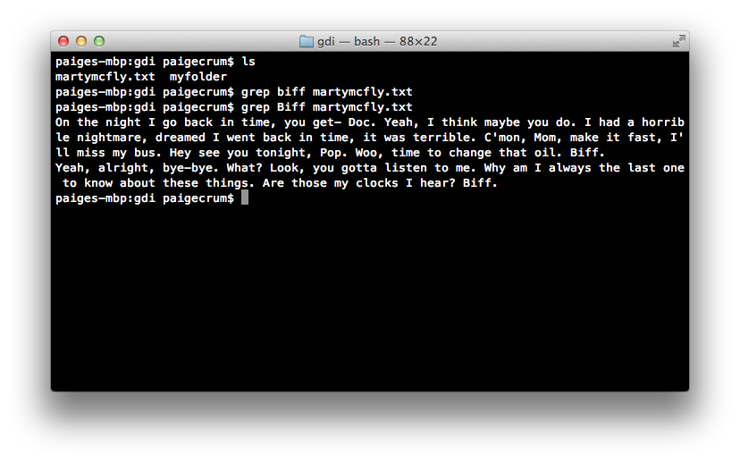
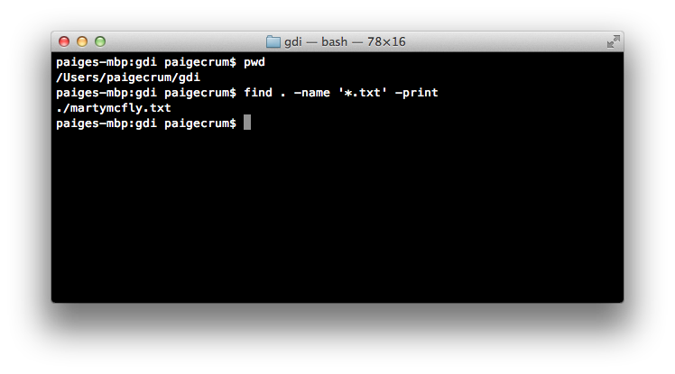
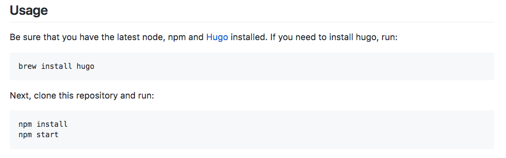

Intro to the Command Line
teaching-materials.org/cli
Agenda
This class will be a combo of lecture + exercises
- Why use the command line?
- Command line "lingo"
- Working with folder directories
- Working with files
- Standard input/output
- Working with commands
When will I use this?
You might use the command line to...
- Automate file actions with a script
- Serve a local directory for testing
- Use version control (like Git)
- Run open source projects
- Use automated build tools
- Control other computers
The "lingo"
- "Terminal"
- "Command-line"
- "Command prompt"
- "Shell"
- "Console"
- "CLI"
These are all pretty much the same thing.
What is a Terminal?
A text-based command interpreter.
The most common shell is "bash".
For Mac OS or Linux, use the "Terminal" application.
For Windows, use Git Bash.
(Download here if you haven't installed yet.)
Prompt

Prompt
Usually shows your username and computer name.
Indicates that the terminal is ready for a command.
Cursor
Cursor
Indicates your current spot in the terminal.
Shows you where the stuff you type will go.
Your First Command
- Type
echo hellointo your terminal. - Press the enter key.
The Current Directory
pwd
(Print Working Directory)
Type it whenever you want to see what directory (folder) you’re in.
pwd
(Print Working Directory)

clear
The clear command clears the contents of the terminal and issues a prompt.
This is good for removing previous output that is unnecessary to the task at hand.
Feel free to use this whenever things get too cluttered.
Directories
Also referred to as "folders".
A container for files or other directories.
Nested files and directories can be referenced using paths.
Directory Trees
The set of all folders, taken together, makes up your entire file system.
This system is organized into a kind of upside down tree.
Directory Trees
At the very top of the tree is the root folder.
Paths
Each directory or file is separated by a forward slash "/"
There are two kinds of paths:
- Relative:
Desktop/the_project/overview.txt - Absolute:
/Users/jane/Desktop/logo.png
cd
The cd command changes the current working directory.
It expects a file path as an "argument".
If no file path is given, it assumes your home directory by default.
cd

Shortcuts
- Current Directory:
. - Parent Directory:
.. - Home Directory:
~ - Previous Directory:
-
Bonus: Drag a folder into the terminal to show its path.
(Doesn't quite work in Windows.)
ls
The ls command lists the contents of a directory.
It expects a file path as an "argument".
If no file path is given, it assumes the current directory by default.
ls

Flags
The ls command accepts several option flags.
A flag is a special argument that is used to set an option for the command.
These are commonly a hyphen followed by a single character (e.g. -g)
Setting the -l flag on the ls command causes it to provide more verbose (long) output.
ls -l

Hidden Files
Filenames that begin with a period are hidden from normal output.
e.g. ".bashrc"
Use the ls command with the -a flag to see hidden files in addition to the usual output.
Type ls -la into your terminal.
Use the -h flag to get human readable file sizes.
ls -la

Man Pages
man
The man command brings up the manual for the specified command. Use <space> or the arrow keys to page through and press q to exit.
$ man lsLove the Tab
Tab completion autocompletes commands and filenames.
- Pressing <tab> once autocompletes a unique instance.
- Pressing <tab> twice gives you all the options available.
$ cd Pcd & ls
Play with the cd and ls commands.
Be sure to incorporate:
- relative file path
- absolute file path
- the
.shortcut - the
..shortcut - the
~shortcut cdwithout an argument
Use pwd to check your location periodically.
Open
Use the open command to open a file or directory in its default app.
Pass the path of the file or directory name as the argument.
It does the equivalent of double-clicking the item.
(Sadly, this does not work in Windows. 😞)
Making a Directory
Use the mkdir command to create a new empty directory.
Pass the path of the directory name as the first argument.
If the base of the path doesn't already exist, the command will fail.
Use the -p flag to create the full path if non-existent.
mkdir
Removing Directories
Use the rmdir command to remove an empty directory.
Use rm -r to remove a non-empty directory.
rmdir
Let's Develop It!
cdto your home directory.- Create the
girl/developdirectory path. - Navigate into the
girl/developdirectory. - Create the
itdirectory. - Navigate up two directories.
- Use the
pwdcommand to verify you are home. - Remove the
girl/develop/itpath.
Let's Develop It
Files
Use cat to output the contents of a file to the console.
Use more to step through the contents of a file one screen at a time.
Use less to step backwards or forwards.
Let's Develop It!
Explore the /usr/share/misc files using cat, more, and less
Can you find your birth month's stone and flower in the birthtoken file?
Sorry, Windows users - I haven't found a good file sample for this yet!
Try looking over the shoulder of a neighbor.
Let's Develop It!

Create a File
touch
Use the touch command to create a new file.
The touch command expects the name of your new file as an argument.
touch
(create a file)
Copy a File
cp
Use the cp command to copy a file.
The cp command takes two arguments:
1st argument = the "origin" file
2nd argument = the "destination" file
$ cp resume.txt resume-copy.txtcp
(copy a file)
$ cp origin destination
Copy a Directory
cp -R
Use the cp -R command to copy a directory.
The cp -R command takes two arguments:
1st argument = the "origin" directory
2nd argument = the "destination" directory
$ cp -R homework old-homeworkcp -R
(copy a directory)
$ cp -R origin destination
Moving (or renaming) a File/Directory
Use the mv command to move a file or directory.
The mv command takes two arguments:
1st argument = the "origin"
2nd argument = the "destination"
Move a File/Directory
mv origin destination

Rename a File/Directory
mv orig dest
Remove a File
rm
Use the rm command to remove a file.
Expects the name of the file you are removing as an argument.
rm
(remove a file)
Let's Develop It!
- Create a folder called cli
- Make that folder your current working directory
- Create two files: file1.txt, file2.txt
- Copy file1.txt and call the copy file3.txt
- Create a directory called folder1
- Move file1.txt into folder1
- List the contents of folder1 without going into it
- Rename file1.txt to myfile.txt
- Remove the directory folder1, without deleting myfile.txt first
- Clear your terminal
Edit a File
You can use various editors built into bash:
$ vi myfile.txt
$ emacs myfile.txt
$ pico myfile.txt
Or on a Mac, you can open with any desktop app:
$ open -a TextEdit myfile.txtOr with the default editor:
$ open -t myfile.txtSearch within a File
grep
Use the grep command to search in files.
The grep command outputs only the lines in a file that match a given pattern.
The 1st argument is the pattern to match, and the 2nd, 3rd, and so on are the files to search within.
$ grep pattern filegrep
(search within a file for text that matches a pattern)
Wildcard Matching
Use the * (asterisk) symbol to match anything.
You can use this to search through all of a particular file type.
$ grep hello *.txtThe shell will build a list of all the files that match the non-asterisk part.
Finding Files
find
Use the find command to find files according to name/metadata.
Find all txt files under the current directory:
find . -name '*.txt' -printfind
(finding files)
Standard Output
Most commands display their results to a mechanism called the standard output.
By default, this directs its content to the display.
The standard output can be redirected to a file using the > operator.
ls > file_list.txt
Standard Output
In order to append to the file instead of overwriting it, use the >> operator instead.
ls >> file_list.txt
Both the > and >> operator will create the file if it doesn't exist.
Standard Input
Whenever commands accept keyboard input, it's likely they are really just drawing input from a mechanism called standard input.
By default, this is set to keyboard input.
Standard Input
The input to a command can be redirected to a file by using the < operator.
sort < file_list.txt
Both input and output can be redirected at the same time.
sort < file_list.txt > sorted_file_list.txt
Let's develop it!
- In the cli directory, output the contents of file2.txt to the terminal
- Add a sentence to file2.txt
- Add a few more sentences to file2.txt
- Search the file for the word of your choice and add the results to file3.txt
Filters
Filters are commands whose behavior follows the following pattern:
- Accept input from standard input.
- Perform some operation on it.
- Send the results to standard output.
Filters
Check out the man pages for the following:
sort
uniq
grep
head
tail
fmt
pr
tr
sed
awk
Pipes
The "|" character can be used to allow commands to communicate during execution.
Pipes are placed between commands.
A pipe will cause the output of the left command to be used as the input of the right command.
ls -l | grep "myfile.txt" du | sort -nr
Let's Develop It!
Use the ls and grep commands to print out only the files in your home directory that contain the word "bash".
Let's Develop It!
ls -a | grep bash
Command Line Movement
- ctrl-a: jump to beginning of line
- ctrl-e: jump to end of line
- alt-f: jump forward a word
- alt-b: jump back a word
- alt-d: delete word
- alt-t: transpose two words
- ctrl-xx: jump back to your last edit, again to get back to original position
More Command Line Movement
- The left/right arrow keys let you edit within a command
- The up/down arrow keys let you select previous commands
- tab auto-completes filenames
Bonus for Macs: Hold the option key and click to move the cursor.
Command Line History
Use the history command to see a list of all your previous commands.
Each command will be listed next to a line number.
A few history-related commands:
- !!: Latest command
- !568: Command by line #
- !open: Command matching string
history

Let's Develop It!
- Use your
upanddownarrows to locate a past command with one or more arguments. - Move your cursor to the beginning of the line.
- Move your cursor to the end of the line.
- Change one of the arguments and run it.
- Run the
datecommand. - Re-run the command from step 4 using
!. - Time the execution of your original command by running
time !!.
Real World Examples
Let's revisit the use cases from the beginning of class and go into more detail.
Serve up a Directory
python -m simpleHTTPServer
Run this from the directory you want to serve.
Press Ctrl + C to exit.
Version Control
Check out Try Git for an intro, or watch for our next GDI Git workshop.
Run Open Source Projects
Installation instructions from an actual open source project:
Control other computers
These "other" computers might be:
- A cloud environment like Cloud9
- A virtual machine or container on your own computer
- A very simple computer like a raspberry pi
ssh gdi@192.168.0.23
Watching a Log File
tail -f /var/log/wifi.log
Troubleshooting: Where's the prompt?!
Different processes have different ways of exiting back to the prompt. If you're stuck, try one of these:
- ctrl + c
- ctrl + x
q:q- esc key, then
:q
Troubleshooting:
`command not found`
You may need to install the software that uses the command.
Try searching online for:
how to install [command-name-here] on [Mac/Windows/Linux]
Just for Fun!
cal
say hello